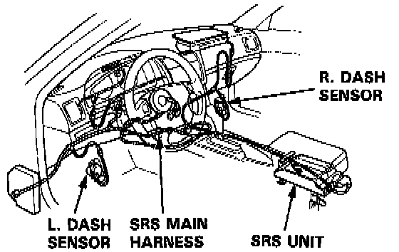
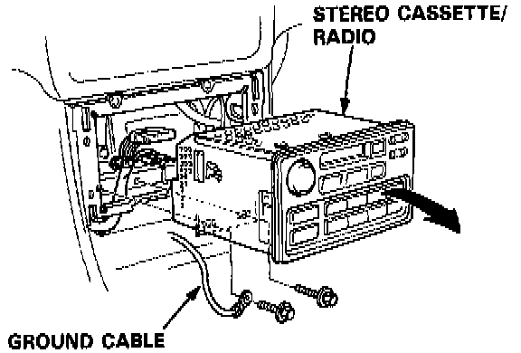

Radio/Stereo: Service and Repair

SRS wire harnesses are routed near the steering column and passenger's side dashboard.
WARNING: All SRS wire harnesses and connectors are colored yellow. Do not use electrical test equipment on these circuits.
CAUTION: Be careful not to damage the SRS wire harnesses when servicing the steering column and glove box.
Stereo Cassette / Radio Replacement
NOTE: The L and LS model radios have a coded theft protection circuit. If servicing to the car requires any of the following, be sure you get the customer's code number before you begin work:
- Disconnection of the battery.
- Removal of fuse No. 56 (7.5 A).
- Removal of the radio itself.
After service, reconnect power to the radio and turn it ON.
The word "CODE" will be displayed. Enter the customer's 5-digit code to restore radio operation.
1. To remove the stereo cassette/radio, first remove the:
- Center console panel.
- Center armrest.
2. Remove the 2 mounting bolts, then disconnect the ground cable. Remove the stereo cassette/radio by sliding it forward you.

3. Disconnect the connectors.
NOTE: Do not drop the bolts inside the dashboard.
4. Installation is the reverse order of removal.
NOTE: Before tightening the mounting bolts, make sure the harnesses are not pinched.